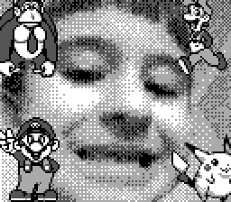

I visited Chicago's Christkindlmarket recently, which is really close to where I live. It gets too crowded, but on a weekday just after work it wasn't so bad. I didn't take any photos or buy much, but the warm glow of the vendor stalls against the cool, snowy pavement made me really want to get back into Blender and do a little scene, which you can see above.
It's probably the most complicated Blender project I've ever done, but I didn't track how long it took me. It's the first time I've touched Blender in a really long time, but I remembered how to do most everything I needed to. I think I sort of worked smarter than usual for me, here. I sketched it out first, imported the sketch into Blender, and "blocked" everything out using basic shapes. Then, I played around with the lighting, since the "glow" was sort of important to me.
I was going for a sort of "cozy diorama" look that you see artists sharing so much of on social media. I also was thinking about the sort of pre-rendered backgrounds you would see a lot of in PSX-era games like the original Final Fantasy VII. The textures are all from AmbientCG, and I used some Google "germanic" font for the signs. As for modeling the objects, I did that all myself, with the exception of the tree I guess, for which I used some sort of Blender plugin or extension that lets you generate trees based on specifications that you input.
I got to do a lot of things for the first time in this project. Geometry nodes have been around forever, but they were kind of new the last time I spent much time in Blender, believe it or not. I got to use them quite a bit in this, especially for the falling snow. I followed some tutorial for that, but it wasn't exactly what I wanted, so I had to make plenty of changes, which was great practice. I also had never really played around with what you can do with curves before. I used them to make the lights wrap around the Welcome sign, and for some other purpose I can't remember now.
I'm very happy with how this turned out, it basically came out exactly how I was picturing it. Here's a little progress video I made as well so it can be seen step-by-step.
Game Boy Camera Memories
2025-12-01
I am not sure whether I received my Game Boy Camera as a gift in '98, '99, or 2000, but I was completely obsessed with it and remain obsessed to this day. Every couple of years or so, I open it up, take a trip down memory lane, and snap a couple of photos, so I actually have a decent collection of selfies through the years.
I was worried about either losing it, or some internal battery dying and losing all of my photos, so I bought some gadget that lets me upload them to my PC. I just included five of them on the site here, but I have them all backed up on hard drives now. The Game Boy Camera might outlive those, though...

Not only was having a digital camera very exciting to me as a 5-year-old, but the software had all kinds of weird, unexpected features and easter eggs. As a Pokemon-obsessed child, I was very happy with the ability to add Pokemon stickers to your pictures, for example.
There were little games you could play that would superimpose photos of your face over the characters, as well. The camera could swivel around, similar to how cell phones have both a front and back-facing camera. I think it took me years to figure out that was possible, though.
For as much fun as I got out of this thing, there are even a lot of features that I didn't use much, if at all. For example, there was a 'Game Boy Printer' accessory. There was also a music creator, which seemed really intense and high-tech to me as a little kid, so I was too scared to play much with it. Anyway, now that I've backed up my old photos, I can free up space to take some more, so maybe I'll make another blog post in 25 years to share my new pics. The last photo here is of Alanis and I with soldering tools to mod the Game Boy so we can see our photos better with a crispy back-lit screen.
Our Trip to Singapore
2025-02-10
Alanis and I recently took a two week trip to Singapore. We stayed in Singapore for two nights, and then we went on a cruise for five nights, and then we stayed another two nights in Singapore.The 17-hour flight was longer than we'd ever experienced, but personally I enjoyed it, as I like being lazy and watching movies and reading.
Our first full day in Singapore, we were taken off guard because it was Chinese New Year, which we had forgotten about, and it's a huge deal in Singapore. There were a lot of crowds, and celebrations, and it was pretty overwhelming. We enjoyed the following day more as we'd learned what to expect by then.The cruise was fantastic, we had stops in Georgetown, Penang, Malaysia and Phuket, Thailand. In Malaysia, we took a tour of some of the historic spots of the area, including a Peranakan museum, and a clan jetty. In Thailand, we did snorkeling and rode canoes through caves. The Thailand stop was more of a beach/resort place, whereas the stop in Malaysia felt like more culture. Both were very good.
On the cruise, we were really impressed with the food and the entertainment. Unfortunately, Alanis caught some sort of cold or flu around the fourth night, and I got food poisoning the same day, so we did not get to fully enjoy the day of cruising only with no stops.When we were back from the cruise and had a couple more days in Singapore, we were basically professional Singaporers at that point, and made the most of our time. Singapore has a lot of cool nonsense. Some highlights that come to mind were the zoo, the Gardens by the Bay, and their giant goofy ferris wheel.
Alanis thoughts: "I had a lot of fun... And it was very nice... I like Thailand best... I think... I would like to go on a dedicated trip to Thailand... My favorite part was how cheeeaaap it was... That's very nice. And I think cheap countries are more fun than expensive countries personally... 'Cuz then you can buy whatever you WANT!!!"


 I was worried about either losing it, or some internal battery dying and losing all of my photos, so I bought some gadget that lets me upload them to my PC. I just included five of them on the site here, but I have them all backed up on hard drives now. The Game Boy Camera might outlive those, though...
I was worried about either losing it, or some internal battery dying and losing all of my photos, so I bought some gadget that lets me upload them to my PC. I just included five of them on the site here, but I have them all backed up on hard drives now. The Game Boy Camera might outlive those, though...